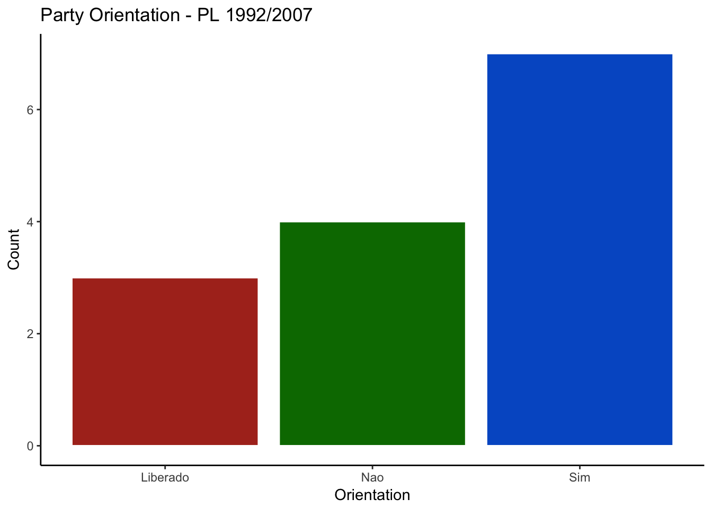

chamber.Rmdcongressbr makes it easy to explore the API of the Brazilian Chamber of Deputies, or the Câmara dos Deputados. The package contains many functions that help researchers to download, standardise and tidy data from the Câmara website. This vignette shows some examples.
First, we need to install congressbr. You can install the package by running:
if(!require(devtools)){install.packages("devtools", repos = "http://cran.us.r-project.org")}
if(!require(ggplot2)){install.packages("ggplot2", repos = "http://cran.us.r-project.org")}congressbr has a dedicated function that returns a dataset with information about votes of a specific bill in the Câmara dos Deputados, the cham_votes() function. As we mentioned in the Senate vignette, the votes returned by the API are not necessarily nominal votes. This is because some votes are secret, thus the API only informs us if the deputy voted or not. Users have to provide the type (type =), number (number =) and year (year =) of the bill in question. Unfortunately, a particular bill can have more than one roll call, and the API does not provide an id to identify them. So we have provided one, the variable rollcall_id in the data frame. For instance, we can retrieve information about the proposition 1992/2007 with:
## # A tibble: 2,052 x 31
## rollcall_id decision_summary decision_date decision_time
## <chr> <chr> <chr> <chr>
## 1 PL-1992-20… Aprovada a Sube… 28/2/2012 20:26
## 2 PL-1992-20… Aprovada a Sube… 28/2/2012 20:26
## 3 PL-1992-20… Aprovada a Sube… 28/2/2012 20:26
## 4 PL-1992-20… Aprovada a Sube… 28/2/2012 20:26
## 5 PL-1992-20… Aprovada a Sube… 28/2/2012 20:26
## 6 PL-1992-20… Aprovada a Sube… 28/2/2012 20:26
## 7 PL-1992-20… Aprovada a Sube… 28/2/2012 20:26
## 8 PL-1992-20… Aprovada a Sube… 28/2/2012 20:26
## 9 PL-1992-20… Aprovada a Sube… 28/2/2012 20:26
## 10 PL-1992-20… Aprovada a Sube… 28/2/2012 20:26
## # … with 2,042 more rows, and 27 more variables: rollcall_subject <chr>,
## # session_id <chr>, DEM_orientation <chr>, GOV_orientation <chr>,
## # Minoria_orientation <chr>, PDT_orientation <chr>,
## # PMDB_orientation <chr>, PMN_orientation <chr>, PP_orientation <chr>,
## # PRB_orientation <chr>, PrPtdobPrpPhsPtcPslPrtb_orientation <chr>,
## # PsbPtbPcdob_orientation <chr>, PSC_orientation <chr>,
## # PSD_orientation <chr>, PSDB_orientation <chr>, PSOL_orientation <chr>,
## # PT_orientation <chr>, PvPps_orientation <chr>, legislator_id <chr>,
## # legislator_name <chr>, legislator_state <chr>, legislator_party <chr>,
## # legislator_vote <chr>, ReprPMN_orientation <chr>, type_bill <chr>,
## # number_bill <chr>, year_bill <chr>The function returns many values that may be interesting to users, such as the summary of the decision (decision_summary), the guidelines given by the government and the opposition to the members of their respective coalitions (GOV_orientation and Minoria_orientation) and what political parties suggested to their deputies. In the example above, we could see how the PSDB (PSDB_orientation) and the PSOL (PSOL_orientation) orientated their members.
We can also get information about the legislator who proposed the bill, such as his or her name (legislator_name), the state that he or she represents (legislator_state), and his or her party affiliation (legislator_party). Those variables are available for each voting stage of the bill.
We have included two functions that retrieve details about particular bills. The first of them is cham_bill_info() function. This function requires three parameters, the bill’s type (type =), number (number =) and year (year =). To retrieve the above-mentioned proposal (projeto de emenda constitucional), the PEC 472/1997, you can type:
## # A tibble: 1 x 19
## bill_type bill_number bill_year bill_id bill_name type_name bill_subject
## <chr> <chr> <chr> <chr> <chr> <chr> <chr>
## 1 "PEC … 472 1997 14784 PEC 472/… Proposta… "\n "
## # … with 12 more variables: ementa_txt <chr>, ementa_explanation <chr>,
## # author_name <chr>, author_id <chr>, author_state <chr>,
## # author_party <chr>, bill_index <chr>, presentation_date <chr>,
## # complete_link <chr>, situation_desc <chr>, last_action_desc <chr>,
## # last_action_date <chr>In another example, we can download data about the law proposition (projeto de lei) 3892/2008 with:
## # A tibble: 1 x 19
## bill_type bill_number bill_year bill_id bill_name type_name bill_subject
## <chr> <chr> <chr> <chr> <chr> <chr> <chr>
## 1 "PL … 3962 2008 408406 PL 3962/… Projeto … Administrac…
## # … with 12 more variables: ementa_txt <chr>, ementa_explanation <chr>,
## # author_name <chr>, author_id <chr>, author_state <chr>,
## # author_party <chr>, bill_index <chr>, presentation_date <chr>,
## # complete_link <chr>, situation_desc <chr>, last_action_desc <chr>,
## # last_action_date <chr>The function return 19 variables, including the decision situation of the proposition (situation_desc), the full text in pdf (complete_link), and personal information about the author of the proposition (author_name, author_state, and author_party).
Another way of downloading the same information would be to use cham_bill_info_id(). The function requires the id of the bill. As an example, we can download some information about a proposal for constitutional amendment by Espiridião Amin, which has the id 14784, using the code below:
## # A tibble: 1 x 19
## bill_type bill_number bill_year bill_id bill_name type_name bill_subject
## <chr> <chr> <chr> <chr> <chr> <chr> <chr>
## 1 "PEC … 472 1997 14784 PEC 472/… Proposta… "\n "
## # … with 12 more variables: ementa_txt <chr>, ementa_explanation <chr>,
## # author_name <chr>, author_id <chr>, author_state <chr>,
## # author_party <chr>, bill_index <chr>, presentation_date <chr>,
## # complete_link <chr>, situation_desc <chr>, last_action_desc <chr>,
## # last_action_date <chr>Users can download all every bill voted on in plenary in a given calendar year with cham_plenary_bills(). The function has a single parameter, year =, and returns the id of the bill (bill_id), its name (bill_name), and the day on which it was voted (vote_date)
## # A tibble: 158 x 3
## bill_id bill_name vote_date
## <chr> <chr> <chr>
## 1 26523 PLP 183/2001 09/12/2008
## 2 129219 PEC 138/2003 13/08/2008
## 3 129219 PEC 138/2003 12/11/2008
## 4 129219 PEC 138/2003 12/11/2008
## 5 129219 PEC 138/2003 12/11/2008
## 6 129219 PEC 138/2003 12/11/2008
## 7 253010 PLP 177/2004 13/08/2008
## 8 255794 PLP 182/2004 13/08/2008
## 9 257126 PLP 184/2004 10/12/2008
## 10 269852 PEC 333/2004 27/05/2008
## # … with 148 more rowsFinally, congressbr also features cham_typeauthors_bills(), a convenience function that downloads the types of authors for bills.
## # A tibble: 43 x 2
## type_id type_desc
## <chr> <chr>
## 1 1 Comissao Diretora
## 2 10 Grupo de Trabalho
## 3 1000 Importacao das proposicoes inativas
## 4 10000 "Deputado "
## 5 11 Conselho
## 6 110 Comissao da Camara dos Deputados
## 7 12 Procuradoria Parlamentar
## 8 12000 Orgao da Camara dos Deputados
## 9 13 Corregedoria
## 10 13000 Comissao Temporaria da CD
## # … with 33 more rowsIn this brief example, we will examine how the parties orientated their deputies to vote in the law proposition 1992/2007, the same we have downloaded with the cham_votes() function. This example makes use of the ggplot2 package.
party_orientation <- cham_votes(type = "PL", number = "1992", year = "2007")
party_orientation <- as.data.frame(t(party_orientation[1, c(7, 10:22)])) # select only one row and the columns of interest; transpose data
names(party_orientation)[1] <- "orientation"
ggplot2::ggplot(party_orientation, aes(x = orientation)) +
geom_bar(aes(fill = orientation), colour = "white") +
theme_classic() +
scale_fill_hue(l = 40) +
ggtitle("Party Orientation - PL 1992/2007") +
labs(x = "Orientation", y = "Count") +
theme(legend.position = "none")
Similarly, we could also have used the dplyr package to see how many parties suggested their members to vote “yay” (sim), “nay” (não), or allowed deputies to decide their votes (liberado).
if(!require(dplyr)){install.packages("dplyr", repos = "http://cran.us.r-project.org")}
library(dplyr)
party_orientation %>%
group_by(orientation) %>%
tally()## # A tibble: 3 x 2
## orientation n
## <fct> <int>
## 1 Liberado 3
## 2 Nao 4
## 3 Sim 7Similarly, we could also have used the dplyr package to see how many parties suggested their members to vote “yay” (sim), “nay” (não), or allowed deputies to decide their votes (liberado).
if(!require(dplyr)){install.packages("dplyr", repos = "http://cran.us.r-project.org")}
library(dplyr)
party_orientation %>%
group_by(orientation) %>%
tally()## # A tibble: 3 x 2
## orientation n
## <fct> <int>
## 1 Liberado 3
## 2 Nao 4
## 3 Sim 7